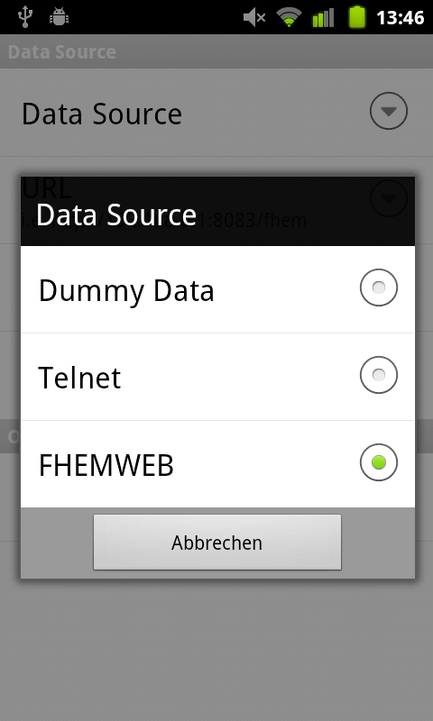

When starting andFHEM the first time some dummy data is used for previewing what the application looks like and what devices are supported. To use your own FHEM server, touch your context menu button and click on Preferences.
You can now see a preference screen. It includes the options for the dummy data connection - so basically none. Still, you can click on Data Source to select another type of source to load the FHEM data from. Clicking on the button brings up a popup screen like the following:
FHEM supports a very basic command line interface to query the current state of devices. Before selecting this option, make sure that you can access the interface from another computer in your local network.
When using Windows, download Putty and start the program. Select telnet as connection option, enter the address of your FHEM server and add the specified port in your FHEM configuration. The port defaults to 7072. When clicking hitting the button to open the connection, a black window opens up. Hit two times enter to see the FHEM prompt showing up. If this works, andFHEM is also able to connect to FHEM.
If not, make sure that your fhem.cfg contains a line such as the following: attr global port 7072 global. 7072 is the port used for opening up the command line interface. Global specifies that computers can connect to the server without connecting from the computer running the FHEM server.
When the above connection is successful you can enter the configuration data in andFHEM in the appropriate fields. The IP field should contain something like 192.168.0.1. It is the address of the computer running the FHEM server. Port is the above mentioned FHEM command line interface port, such as 7072.
Afterwards click back and refresh the loaded data. You should now see your own devices!
FHEM supports some web interfaces delivered together with the server itself. One of these web interfaces is FHEMWEB, which is configured by adding a line like define fhemweb FHEMWEB 8083 global to your fhem.cfg. Before any data within andFHEM, make sure that you can access the web interface in a browser, either on your smartphone or on another computer. You should see a web page like the following:

The same address you just entered is expected by andFHEM in the URL field within the FHEMWEB preferences. Trailing slashes do not matter. The username and password fields can be filled optionally. They are required if you want to authenticate yourself using basic authentication. If you do not know what this means, stop reading here and leave the fields empty.
If you want to use the authentication feature you have to make sure that your fhem.cfg contains a line like attr fhemweb basicAuth aj38219cnake. For information how to create the string after basicAuth, continue reading here. Now just enter your username and password in andFHEM.
Finally, touch your back button and refresh the loaded data. You should now see your own devices!

Google Cloud Messaging (GCM) enables you to send push notifications to Android handsets. This enables you to send updates in nearly realtime to andFHEM (from 2.4.2 onwards).
Installation Steps:

{kind=link}
{kind=link}
{kind=link}